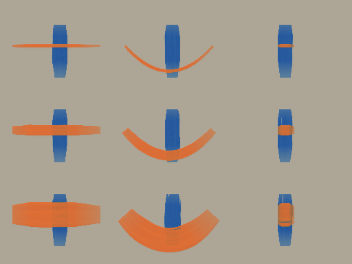
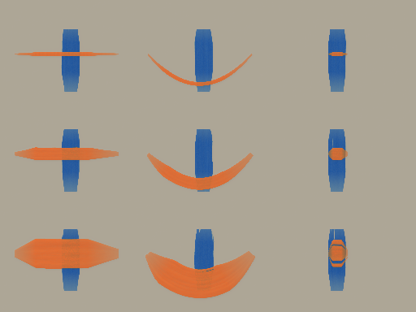
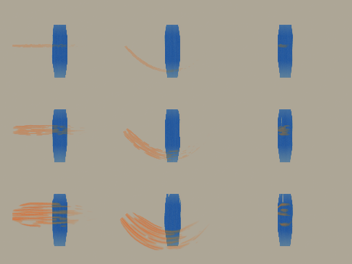
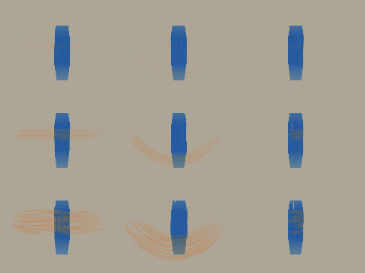
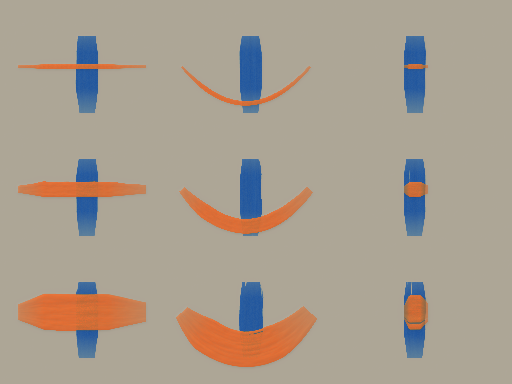
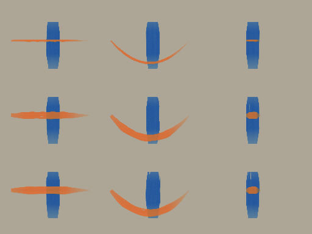
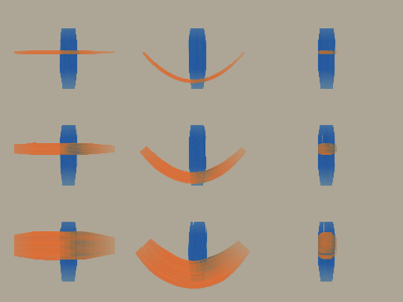

Seven candidate brushes Engine 2.0.0-dev.3 · author format 1 · catalog 1. Real renderer output, consistent relief lighting. Automated calibration and cross-runtime evidence; awaiting artist review.
Inspect loaded landings, edge breakup, tails, wet-blue pickup and relief. Height maps use a fixed 0–3 scale. Fine-detail marks and dry bristles can disappear below one pixel; compare both resolutions. No physical filbert, fan or knife model is claimed.
Plane hashes and measured timings Loaded flat candidate Rows: 0.008 / 0.028 / 0.065 cw, clamped to preset range. Columns: straight / curve / dab, crossing wet blue paint.
Native · 512 px 
Chromium WASM · 512 px (identical bytes) 256 native lit · 256 native unlit · 256 native height 256 browser lit · 256 browser unlit · 256 browser height 512 native lit · 512 native unlit · 512 native height 512 browser lit · 512 browser unlit · 512 browser height
Reopen document in preview Rounded dab candidate Rows: 0.008 / 0.028 / 0.065 cw, clamped to preset range. Columns: straight / curve / dab, crossing wet blue paint.

Native · 512 px Chromium WASM · 512 px (identical bytes) 256 native lit · 256 native unlit · 256 native height 256 browser lit · 256 browser unlit · 256 browser height 512 native lit · 512 native unlit · 512 native height 512 browser lit · 512 browser unlit · 512 browser height
Reopen document in preview Dry drag candidate Rows: 0.008 / 0.028 / 0.065 cw, clamped to preset range. Columns: straight / curve / dab, crossing wet blue paint.

Native · 512 px Chromium WASM · 512 px (identical bytes) 256 native lit · 256 native unlit · 256 native height 256 browser lit · 256 browser unlit · 256 browser height 512 native lit · 512 native unlit · 512 native height 512 browser lit · 512 browser unlit · 512 browser height
Reopen document in preview Scumble candidate Rows: 0.008 / 0.028 / 0.065 cw, clamped to preset range. Columns: straight / curve / dab, crossing wet blue paint.
Native · 512 px 
Chromium WASM · 512 px (identical bytes) 256 native lit · 256 native unlit · 256 native height 256 browser lit · 256 browser unlit · 256 browser height 512 native lit · 512 native unlit · 512 native height 512 browser lit · 512 browser unlit · 512 browser height
Reopen document in preview Impasto accent candidate Rows: 0.008 / 0.028 / 0.065 cw, clamped to preset range. Columns: straight / curve / dab, crossing wet blue paint.

Native · 512 px Chromium WASM · 512 px (identical bytes) 256 native lit · 256 native unlit · 256 native height 256 browser lit · 256 browser unlit · 256 browser height 512 native lit · 512 native unlit · 512 native height 512 browser lit · 512 browser unlit · 512 browser height
Reopen document in preview Fine detail candidate Rows: 0.008 / 0.028 / 0.065 cw, clamped to preset range. Columns: straight / curve / dab, crossing wet blue paint.
Native · 512 px 
Chromium WASM · 512 px (identical bytes) 256 native lit · 256 native unlit · 256 native height 256 browser lit · 256 browser unlit · 256 browser height 512 native lit · 512 native unlit · 512 native height 512 browser lit · 512 browser unlit · 512 browser height
Reopen document in preview Wet mixing candidate Rows: 0.008 / 0.028 / 0.065 cw, clamped to preset range. Columns: straight / curve / dab, crossing wet blue paint.

Native · 512 px Chromium WASM · 512 px (identical bytes) 256 native lit · 256 native unlit · 256 native height 256 browser lit · 256 browser unlit · 256 browser height 512 native lit · 512 native unlit · 512 native height 512 browser lit · 512 browser unlit · 512 browser height
Reopen document in preview